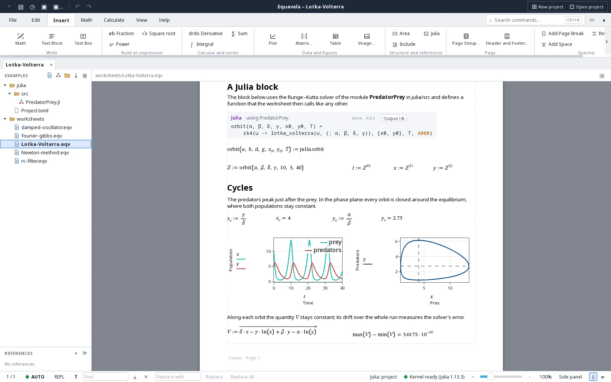

Live mathematics
Write as you would on paper. Definitions, functions, ranges, vectors and matrices update the whole page in reading order.
Scientific computing workspace
Definitions, units, symbolic algebra, programs, plots and explanatory text on one live page, with Julia underneath. What you see on screen is exactly what you print.
Free and open source (MPL-2.0) · version 0.1 alpha, under active development.

What it does
Place mathematics, text, plots and images anywhere on the page. Every result recalculates as soon as something it depends on changes.
Write as you would on paper. Definitions, functions, ranges, vectors and matrices update the whole page in reading order.
Quantities carry their units through every step: and give a cut-off of , and wrong dimensions are caught.
The symbolic arrow simplifies, differentiates and integrates exactly, with assumptions such as an integer . Powered by SymPy.
Loops, conditions and local variables inside an expression, for algorithms that are clearer as a small program than as a formula.
Line and marker traces, logarithmic axes, reference lines, legends and axis titles, all from the worksheet's own expressions.
Differential equations, root finding, integrals, sums, statistics and linear algebra, running on Julia.
Write Julia blocks next to your mathematics, call any Julia package, or keep your own modules in a project.
Pages are laid out in points with bundled fonts, so the PDF looks exactly like the screen.
Examples
Real worksheets in the real application. Scroll through each one, or download the whole example project and open it in Equavela.
Mathematical analysis
A square wave of period is rebuilt from its Fourier series. The coefficient is solved symbolically for an integer , and the partial sums are plotted against the wave.
Next to the jump the sums overshoot by about whatever the number of terms: , the sine-integral limit.
Download the worksheet ↓Classical mechanics
A mass of on a spring of with viscous damping. Natural frequency and damping ratio come out with their units; a Runge–Kutta solver integrates in steps.
The numerical solution matches the exact one to , and the energy plot shows where the motion goes.
Download the worksheet ↓Electronics
A resistor and a capacitor make the simplest low-pass filter. Its complex transfer function gives the gain in decibels and the phase in degrees.
At the cut-off the gain is and the phase , drawn as a Bode plot on logarithmic axes.
Download the worksheet ↓Numerical analysis
Newton's own example, , solved by a small program. The derivative is found symbolically, and the iteration collects every estimate in a vector.
The errors fall faster and faster: the ratio settles near , the mark of quadratic convergence.
Download the worksheet ↓Projects and Julia
A project keeps worksheets, data, images and Julia code together, with its own Julia environment. The explorer shows it all, and .jl files open in the built-in code editor.
Population dynamics
The Lotka–Volterra equations with , , and . The project's Julia module PredatorPrey holds a Runge–Kutta solver; a Julia block in the worksheet uses it to define a function that the mathematics then calls like any other.
Both populations cycle around the equilibrium , and the conserved quantity drifts by only over the run.
Download the example project ↓Call a function of any Julia package straight from the mathematics; values cross between the page and Julia through a checked conversion layer.
Worksheets are plain YAML with the mathematics as linear text, easy to read, compare and keep under version control.
Import Mathcad worksheets, both .mcdx and .xmcd, as new Equavela worksheets, with a report of what was converted.
Learn the workspace
The built-in manual covers the window, mathematical editing, units, functions, programs, plots, projects and Julia, with every built-in function documented and searchable.
Equavela runs on Windows and Linux. The source code is on GitHub.